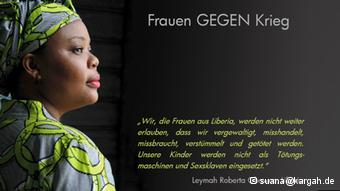

پذيرش > سایت نوشته ها > جنبش زنان علیه جنگ؛ تجاوز جنسی در جنگ، جنایت علیه بشریت است


 جنبش زنان علیه جنگ؛ تجاوز جنسی در جنگ، جنایت علیه بشریت است جنبش زنان علیه جنگ؛ تجاوز جنسی در جنگ، جنایت علیه بشریت است
3 مهر 1392 - بهجت امید - نسخه قابل چاپ
در آکسیون "ارسال کارت پستال علیه جنگ" که از سال پیش آغاز شده است، چند گروه زنان آلمانی ـ ایرانی شرکت دارند. دویچه وله با سرور صاحبی، نمایندهی یکی از این گروهها در باره چگونگی مبارزه زنان علیه جنگ گفتوگو کرده است.

زنان و کودکان مظلومترین قربانیان جنگها و درگیریهای خونین در جهان هستند. برای نمونه، خشونتهای جنسی علیه زنان در جنگ دههی ۱۹۹۰ در یوگسلاوی سابق، چنان وحشیانه و گسترده بود که اعتراض نیروهای آزادیخواه جهان را برانگیخت. بر اساس برآورد پارلمان اروپا، در این جنگ که بیش از ۴ سال به طول انجامید، بیش از ۶۰ هزار تجاوز صورت گرفته است. این تجاوزات بیرحمانه، اغلب در کمپهایی که در رستورانها، متلها، مدارس و دیگر مجتمعهای بزرگ ایجاد شده بودند، صورت گرفت. مشهورترین کمپ تجاوز Partizan Sports Hall بود که در آن، بر اساس گزارشها، بیش از ۷۰ زن ماهها به اسارت گرفته شده بودند و شکنجه میشدند.
پیمان سازمان ملل
شورای امنیت سازمان ملل برای جلوگیری از تکرار فجایع جنسی در جنگ، در پیمان شمارهی ۲۱۰۶ خود تاکید کرده است که «خشونت جنسی، در صورتی که به عنوان شیوه یا تاکتیک جنگی یا بخشی از یک حملهی گسترده و سیستماتیک علیه جمعیت غیرنظامی کشوری صورت گیرد... میتواند در شرایطی، جنایت علیه بشریت تلقی شود.» در این قطعنامه که در ژوئن سال ۲۰۱۳ به تصویب رسید، همچنین "تجاوز و دیگر اشکال جدی خشونت جنسی در درگیریهای مسلحانه" در ردیف جرایم جنگی قابل مجازات قرار گرفته است.
این قطعنامه، ششمین پیمان مصوبهی سازمان ملل متحد تحت عنوان "زنان، صلح و امنیت" و چهارمین قطعنامه در مورد "خشونتهای جنسی مرتبط با مخاصمات" بهطور کلی است.
آکسیون "ارسال کارت پستال علیه جنگ"
تصویب این پیمانها، از جمله حاصل تلاشها و مبارزات زنان و گروههای صلحدوست جهانی است. در این راستا، آکسیون "ارسال کارت پستال علیه جنگ" آلمان که قرار است تا سال ۲۰۱۴ ادامه داشته باشد، بخشی از این کوششهای مستمر را تشکیل میدهد. گزینش این سال به عنوان زمان اختتام این آکسیون، تصادفی نیست. در فراخوان کمیتهی تدارکی "ارسال کارت پستال علیه جنگ" آمده است: «در سال ۲۰۱۴، صدمین سالگرد جنگ جهانی اول برگزار میشود... (با اینحال) هنوز آتش ویرانگر جنگ در مناطق مختلف جهان بر پاست و پیامدهای وحشتناکی برای انسانها به همراه میآورد.»
پیوند "روز زن" با جنبش ضد جنگ
آکسیون "ارسال کارت پستال علیه جنگ"، در تاریخ ۸ مارس ۲۰۱۳ آغاز شده است. کمیتهی تدارکی این حرکت، دلیل گزینش این روز را توافق نمایندگان کشورهای عضو سازمان ملل بر سر انتخاب آن به عنوان روز جهانی زن در صد سال پیش، عنوان کرده است. در فراخوان این کمیته آمده است: «روز جهانی زن بر اساس اتحاد ملل برای احقاق حقوق زنان و صلح جهانی به وجود آمد. در آن زمان هم مانند امروز، زنان در همه جای جهان برای حقوق خود و زندگی صلح آمیز تلاش می کردند.»
دویچه وله برای آشنایی با چگونگی شکلگیری و اجرای این آکسیون، با سرور صاحبی که در شهر هانوفر در نهادی به نام "کارگاه" کار میکند، گفتوگو کرده است. "کارگاه"، نهاد چندملیتی آموزشی، فرهنگی، سیاسی و مددکاری اجتماعی است که با گروههای دیگر در برگزاری آکسیون "ارسال کارت پستال علیه جنگ"، همکاری داشته است.
دویچه وله: معمولا، در سالروز آغاز یا پایان جنگهای جهانی، در نکوهش این پدیدهی ویرانگر مراسمی بر پا میشود و اغلب فعالیت گروههای صلحجو در همین چارچوب باقی میماند. فعالیت گروهی که شما با آن همکاری میکنید، یک سال ادامه دارد. این حرکت اعتراضی چگونه شکل گرفت و چه هدفی را دنبال میکند؟
سرور صاحبی: خود این حرکت که ما زنانی را معرفی می¬کنیم که برضد جنگ در کشورهای مختلف دنیا به شکلهای گوناگون فعالیت کردهاند، نشان میدهد که این کنشها پیوسته بوده است. اما نه به گونهای که بزرگ و پر سروصدا باشد. بلکه نشانگر این امر است که زنان پیوسته و ژرف به مقابله با این پدیدهی ویرانگر بپا خاستهاند.
حضور زنان در جنبشهای ضد جنگ اما مرد محور بود. یعنی که زنان در آن، نقش مبهمی به عهده داشتند. در پایان دههی ۱۹۶۰ زنان، جنبش مستقل خود را در مبارزه با جنگ و برای برقراری صلح آغاز کردند و به سازماندهی در گروههایی کوچک پرداختند. این زنان دیگر نمیخواستند ساختارهای سخت قدرت مردانه را گسترش دهند.

شکلیایی ما زنان ایرانی و زنان "لاروزا" در همایش آلمان، هم به عنوان جنبشهای مستقل زنان بر همین مبنا صورت گرفت. حدود ۱۸ سال است که زنان کنشگر هانوفری از ایرانی گرفته تا افغانی، ترک، روس و گروههای زنان آلمانی در هانوفر، باهم روز جهانی زن، ۸ مارس را در این شهر برگزار میکنند. یکی از گروههای برگزار کننده، گروه بینالمللی زنان "لاروزا" ست که از سه گروه "همایش زنان ایرانی"، گروه "زنان کارگاه" و "گروه بینالمللی زنان"، تشکیل میشود. دفتر "مشاوره برای زنان خارجی" که "سوانا" نام دارد، هم با ما در این حرکت همکاری میکند.
زنان "لاروزا" هر دو هفته یک بار دور هم جمع میشوند و برای یک¬سال آینده در زمینههای فرهنگی و سیاسی برنامهریزی میکنند. یکی از مهمترین برنامههای آنها همیشه، برگزاری ۸ مارس است. در برنامهریزیهای ۸ مارس، همیشه به گونهای تلاش شده که با دعوت از زنان فعال و کنشگر کشورهای مختلف، نگاه زنان نسبت به اوضاع سیاسی و خواستههای آنان هم به بحث و تبادل نظر گذاشته شود.
امسال این حرکت ما زنان در هانوفر به مناسبت صدمین سال جنگ جهانی اول ۱۹۱۴ شکل گرفت، با شعار "زنان علیه جنگ".
فکر ادامه این حرکت به این سبب بود که مدت طولانیتری آثار و زشتیهای جنگ در افکار عمومی مطرح شود. به همینخاطر ما یک سری اکسیون و نشست در طی این مدت تدارک دیدیم تا همبستگی زنان جهان علیه جنگ را تداوم بخشیم.
در ضمن این حرکت، فقط به انتشار این پست کارتها محدود نمیشود. "لا روزا" یک سری سخنرانی هم برضد جنگ برنامهریزی کردهاست، که پارهای از آنها در سال ۲۰۱۳، در ۲۹ اکتبر و دیگری در روز ۲۵ نوامبر، روز جهانی مبارزه علیه خشونت بر زنان، خواهد بود. این تلاشها تا ۲۵ نوامبر ۲۰۱۴ ادامه دارد.
از سوی دیگر بسیاری پس از پایان جنگ جهانی دوم فکر میکنند که این گونه جنگها به پایان رسیده است. اما در قرن ۲۱ ما شاهد این هستیم که چنین نیست. اشکال جنگها عوض شده، ولی در جهانی بودن آن تغییری بهوجود نیامده است. چون تمام جهان درگیر این و آن جنگ پاره پاره و منطقهای است. در اطراف خود ما، جنگ فلسطین، جنگ ۸ سالهی ایران و عراق، لیبی، افغانستان، سودان، و کشورهای دیگر آفریقایی، جنگ بوسنی و هرزگوین و جنگ لبنان و .... تازه برخی به نام حمایت از زنان و کودکان در جنگ، به کشور دیگر حمله میکنند. نمونه عراق و افغانستان.
کمیتهی تدارکی این حرکت سعی میکند، تاثیرات نابودکنندهی جنگ را از دید زنان بررسی کند و آغاز فعالیت خود را ۸ مارس (روز جهانی زن) سال ۲۰۱۳ قرار داده است. این به معنای محدود کردن دامنهی پیامدهای ویرانگر جنگ به مسائل زنان نیست؟
چگونه میشود با این که پیامدهای نابود کنندهی جنگ را میبینید که قربانیان اصلی آن زنان و کودکان هستند، مطرح کرد که این امر محدود کردن دامنهی پیامدهای جنگ است. ما زنان با جنگ از اساس در تمام زمینهها مخالف هستیم. جنگهای بی پایان و خشونت مداوم علیه زنان دو پدیدهی جدا از هم نیستند. این دو زادهی ساختار جامعهی مردسالارانه اند. نظامیگرایی همواره یکی از اساسیترین منابع ایجاد خشونت علیه زنان بوده است. در حقیقت نظامیگرایی یکی از ستونهای جامعهی مردسالار است.
در طول تاریخ جامعه پدر، مرد سالار برپاکنندهی جنگ و خشونت بوده و تا کنون هم این روند ادامه دارد.
خیلی روشن است که در این روز زنان بر ضد این ساختار مبارزه کنند.
از این گذشته زنان همیشه مجبور بودند که بار سنگین جنگ و صدمههای ناشی از آن را تحمل کنند. این زنان بودند و هستند که در رابطه با تجاوز به زنان در جنگ اعتراض کردند و یا برای احقاق حقوق کودکانی که در اثر تجاوز بدنیا میآیند، دست به تظاهرات زدند. این زنان هستند که بار این درد را تا آخر زندگی خود به دوش میکشند. از این رو آغاز کنندگان جنبش صلح که ما زنان آن را جنبش ضد جنگ میدانیم، زنان بودند و هستند.
اولین تلاش زنان مبارز اروپایی در اعتراض به جنگ در ۸ مارس ۱۹۱۵ بود که با تم ضدیت با جنگ در چند کشور اروپایی برگزار شد. در هشتم مارس سال ۱۹۱۷ تظاهرات زنان کارگر در پتروگراد با شعار اصلی اعتراض به جنگ، گرسنگی و تزاریسم موجب شد که کارگران نیز به صفوف زنان بپیوندند و تظاهرات روز جهانی زن به تظاهرات عظیم ضد جنگ تبدیل شود.

عکسهای زنانی که روی کارتپستالهای شما چاپ شدهاند، چگونه انتخاب شدهاند؟
در این رابطه از میانهی سال ۲۰۱۲ ، بیست زن از زنان "لاروزا" آغاز به جست و جو کردند و از میان حدود ۶۰ زن کنشگر ضد جنگ از کشورهای مختلف، ۱۶ زن را به عنوان سمبل یا نماد این حرکت جهانی انتخاب کردند.
انجی سالتر (Angie Setler) از انگستان، اروندهاتی روی (Arounhati Roy) از هندوستان، ایمانه خلیفه (Imane Khalifeh) از لبنان، کلارا زتکین (Clara Zetkin) از آلمان، دخا ابراهیم عبدی (Dekha Ebrahim Abdi) از کنیا، فِلدا اولکر (Ferda Ülker) از ترکیه، تائیتا سونوسوا (Taita sunosova)، وسنا ترسلیک (Vesna Terselik) از کرواسی، لیما روبرتا گِه بُوی (Leymah Roverta Gbowee) از لیبریا، هیمن و آگوسپورگ (Heyman & Augspurg) از لایپزیک آلمان، ملالای جویا (Malalai Joya) از افغانستان، یودیت باتلر (Judith Butler) از آمریکا، سامیه فرهت ناصر (Sumaya Farhat-Nasser) از فلسطین، یولانده موکاگاسانا (Yolande Mukagasana) از رواندا، و استانیسلاوکا سایوویک (Stanislavka Zajovik) از یوگسلاوی سابق، ۱۶ زنی هستند که شما تصویرشان را در پوستر می¬بینید.
متأسفانه در ایران به دلیل کمبود اسناد و اطلاعات نتوانستیم زنی را بیابیم که به طور مشخص مطلبی ضد جنگ نوشته یا کنشی انجام داده باشد. گرچه میتواند تلاشهایی در این زمینه وجود داشته باشد، ولی از آنجا که ثبت نشده، دسترسی به آن ممکن نبود. با این وجود در این اکسیون زنان ایرانی هم فعال بودهاند.
این نکته را نیز باید متذکر شوم این آغاز کار است. ما از همه زنان میخواهیم اگر زنی را میشناسند یا جنبشی را که در زمینهی ضد جنگ فعالیت میکنند، معرفی کنند. چه در خصوص تهیهی کارت پستال، و چه خود آنها، در هر کجا که هستند برای پایداری این حرکت تلاش کنند.
ـ استقبال از این آکسیون تا بهحال چگونه بوده است؟
بسیار مثبت بوده است.
ـ چه سازمانهای دیگری با شما همکاری میکنند؟ هزینهی فعالیتهای روشنگرانهی خود را چگونه تامین میکنید؟
این حرکت با همکاری نهادهای "سوانا"، "لاروزا"، "همایش زنان ایرانی"، بنیاد هانریش بل و بنیاد روزا لوگزامبورک نیدرزاکسن و چند دفتر دیگر آغاز شده و پیش میرود. هزینهی سری اول کارت پستالها را دفتر برابر- حقوقی زنان شهر هانوفر به عهده گرفته است.
ـ آیا با سازمانهای دیگری که در برخی از کشورهای جنگزده به یاری زنان آسیبدیده میروند و بر ضد اثرات فاجعهبار جنگ بر زندگی زنان فعالیت میکنند (مانند نهاد یاریرسانی "مدیکا موندیاله") همکاری دارید؟
نه، با این نهاد همکاری نداریم.
برای دریافت کارت پستال به آدرس زیر مراجعه کنید:
suana@kargah.de
دویچه وله
ارسال به
بالاترین
،
توییتر
،
فریندفید
،
فیسبوک
در همين بخش :
 یک خبر تلخ؟ یک قانونشکنی؟ یک تصمیم بخشنامهای جدید؟ یک خبر تلخ؟ یک قانونشکنی؟ یک تصمیم بخشنامهای جدید؟
چرا بایست به سکسوالیته پرداخت؟ / نفیسه آزاد
آزارجنسی خانگی؛ «قربانی» نه، «نجات یافته»
زنان، بزرگترین بازندگان بهار عرب
سانسور از دیدگاه جنسیتی/الهه امانی
ديگر بخش ها :
طرح یک میلیون امضا
|
مقالات
|
سایت نوشته ها
|
اخبار
|
گزارش كمپين
|
گفت و گو
|
علیه سکوت
|
كوچه به كوچه
|
نامه های شما
|
گزارش ویژه
|
گفتگو با اعضا
|
ویژه سالگرد کمپین
|
تصویر برابری
|
دل آرام علی
|
تریبون
|
مقالات
|
تاریخ شفاهی
|
خارج از چارچوب
|
کتابخانه
|
درباره کمپین
|
کمپین در شهرها
|
کمپین در بند
|
صدای تغییر
|
ویژه 22 خرداد
|
لایحه حمایت از خانواده
|
گالری
|
عشا مومنی
|
امیر یعقوبعلی
|
خدیجه مقدم
|
راحله عسگری زاده و نسیم خسروی
|
پروین اردلان،جلوه جواهری، مریم حسین خواه، ناهید کشاورز
|
زینب پیغمبرزاده
|
سعیده امین، سارا ایمانیان، محبوبه حسین زاده، ناهید کشاورز و همایون نامی
|
احترام شادفر
|
نسیم سرابندی زاده،فاطمه دهدشتی
|
وبلاگ مهمان
|
پرونده خرم آباد
|
دستگیری ها
|
مریم مالک
|
پرستو اللهیاری
|
مهرنوش اعتمادی
|
سمیه رشیدی
|
Other Languages
|
همراهان
|
«فراخوان کمپین ده روز با بهاره هدایت»
| English
|